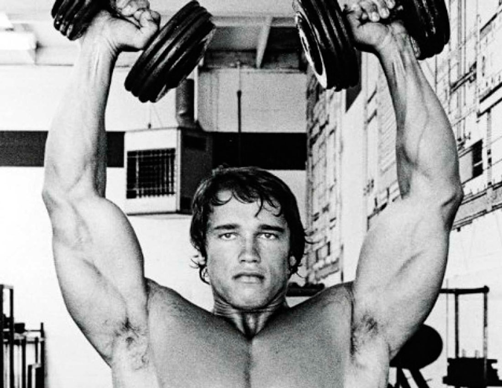
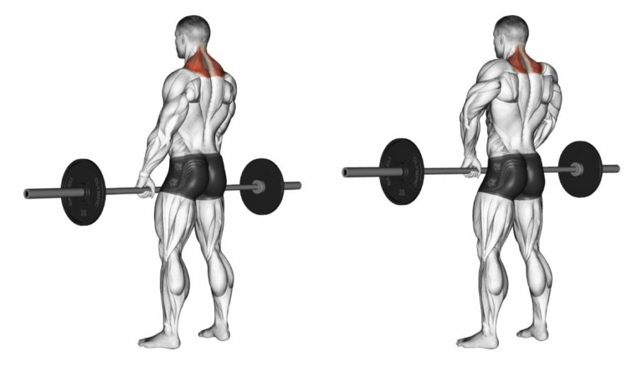

Жим гантелей сидя – упражнение для развития дельтовидных. Преимущественная нагрузка ложится на переднюю и среднюю дельту. Вариации упражнения различаются в зависимости от наклона скамьи. Чем более вертикальный угол наклона применяется, тем больше загружается средняя дельта, и меньше – передняя и мышцы груди. Уклон под 30 градусов и ниже смещает акцент на пекторальные мышцы. Часть веса гантелей ложится на грудные мышцы. Тогда упражнение применяется как специально-подготовительное для жима лежа, чтобы развить синергию (одновременную работу) мышц груди и плеч. Во всех остальных случаях, жим служит для увеличения объема плеч и силы мышц.
Техника выполнения упражнения
Это упражнение выполняется сначала с разминочными весами, затем – с рабочим. Не нужно спешить, или пытаться оттолкнуть от себя вес так, чтобы гантели ушли вперед. Если используются большие веса, можно использовать атлетический пояс, ровно настолько, чтобы убрать лишнюю подвижность в поясничном отделе позвоночника.
Расположить их так, чтобы можно было с пола сделать взятие на бедра сидя, то есть поставить гантели на бедра, удерживая их руками;
Ногами подтолкнуть веса к плечам;
Развести локти так, чтобы гантельные грифы оказались в плоскости, параллельной полу;
Сам жим начинается с опускания локтей вниз и выставления предплечья перпендикулярным полу;
Одновременно с этим рекомендуется свести лопатки и опустить их вниз к тазу
Небольшой прогиб в поясничном отделе позвоночника допускается, но акцентировать его не надо
Включением мышц плеча и трицепса гантели выводятся вверх
Локти разгибаются в плоскости, перпендикулярной полу, «скашивать» их вперед или назад не рекомендуется
Опустить гантели к плечам, и выполнить нужное количество повторений
Советы
Жим необходимо выполнять с неболшим поворотом локтей к груди, так как ровное прямое выжимание способствует стиранию суставов и послежущим травмам плеч
Даже если плечи у вас в плане стоят после ног, разминочный вес пожать все равно нужно. А точнее – начать с минимального веса, и подойти к рабочему с шагом в 3-5 кг.
Жим гантелей сидя подчиняется обычному правилу – выдох происходит на усилие, вдох – на опускании снарядов.
Ронять гантели на себя и быстро и поверхностно вдыхать не стоит. Нужно аккуратно опускать гантели к плечам и вдыхать достаточно объемно
Важно: локти должны сгибаться и разгибаться с одинаковой скоростью в одной и той же амплитуде. Не нужно позволять им «гулять» вперед-назад. Это поможет сделать движение технически правильным и безопасным.
Когда выполнять
В начале тренировки, так как упражнение является базовым и требует много сил.
Количество повторений
3-4 подхода по 8-10 раз. Достаточно выполнять 1-2 раза в неделю.
Практическое видео
Жим Арнольда Шварценеггера

Арнольд Шварценеггер любил делать жимы на плечи. Одним из вариантов, с которым Железный Арни засветился перед камерами, стал жим с разворотом гантелей сидя с груди. Сложно звучит? Никто не хочет называть движение именно так, поэтому к нему «прицепилось» более короткое и яркое название – жим Арнольда. Неизвестно, кстати, придумал ли Шварценеггер эту вариацию сам или позаимствовал у кого-то. Во времена Золотой Эры бодибилдинга люди просто поднимали тяжести, соблюдали питание и участвовали в соревнованиях, и не старались при этом запатентовать каждый методический прием. Сегодня это движение используют как профессионалы, так и любители фитнеса.
Техника выполнения упражнения
Сядьте на скамью, плотно прижмитесь к спинке. Поднимите гантели на уровень плеч или попросите партнера подать вам их. Разверните руки костяшками вперед. Это ваша стартовая точка. За счет поворота кистей гантели
Начните выжимать гантели. Когда гантели будут располагаться примерно на уровне лба, начинайте их разворачивать. Жим делается на выдохе. Нужно распланировать время так, чтобы вы полностью закончили поворот к тому моменту, когда выжмите их в полную амплитуду.
Не делая остановки в верхней точке, плавно опустите их вниз. С разворотом принцип такой же – заканчиваем разворачивать гантели одновременно с опусканием. Вся негативная фаза движения проходит на вдохе.
Советы
В течение всего подхода взгляд должен быть направлен строго перед собой.
Полностью выпрямляйте локти в верхней точке, но не делайте длительных остановок. В этот момент ваши плечи расслабляются, и эффективность выполнения упражнения падает.
Не нужно бить гантели друг о друга в верхней точке – поберегите спортивный инвентарь.
Оптимальный диапазон повторений для этого упражнения – 10-15. Это даст хорошую накачку и создаст все предпосылки для роста массы и силы.
Подберите оптимальное для себя положение гантелей. Не бойтесь вывести их вперед на несколько сантиметров в нижней точке. Если вы используете умеренного веса гантели, к травме это не приведет.
Когда выполнять
Это упражнение предназначено для опытных спортсменов, умеющих правильно чувствовать работу дельтовидных мышц. Чаще всего оно ставится в конец тренировки, чтобы окончательно добить уже утомленные передний и средний пучки.
Количество повторений
3-4 подхода по 8-12 повторений. Вес должен быть таким, чтобы поднятие гантелей "в горизонт" не вызвал больших трудностей и посторонней помощи.
Практическое видео
Шраги со штангой

Шраги со штангой - изолированное тяговое упражнение для развития трапециевидной мышцы. В процессе выполнения также участвуют дельты.
Техника выполнения упражнения
Упражнение с отягощением, выполняемое методом своеобразного пожимания плечами. Существует несколько вариаций выполнения.
Стоя. Встать прямо, ноги на ширине плеч, колени мягкие, спина прямая. Голова зафиксирована в одном положении, взгляд направлен прямо. Взять штангу на уровне бедра, на выдохе приподнять плечи, на вдохе опустить. Штанга в это время перемещается вверх-вниз за движением плеча.
Штанга за спиной. Исходное положение то же, что и при выполнении шрагов стоя. Руки отведены назад, штанга движется на уровне ягодиц. При подъеме плечевого пояса необходимо свести лопатки, иначе поднять снаряд не получится.
Лежа на скамье. Лечь на наклонную скамью, штанга лежит на полу. Наклон скамьи подбирается индивидуально, главное, чтобы спортсмен мог дотянуться до штанги. Взять снаряд в руки, на выдохе приподнять плечи, поднимая штангу, на вдохе – опустить и вернуться в исходное положение.
Советы
По мнению тренеров, шраги эффективнее выполнять с гантелями, хотя бы потому, что таким образом работать с гантелями удобнее. Этот снаряд лучше оставить для базовых упражнений.
Во время выполнения руки в локте выпрямляются. Шраги не выполняются с полусогнутыми локтями, иначе увеличивается нагрузка на руки.
Поднимая плечи, необходимо задержаться в верхней позиции на 1 секунду, а затем плавно вернуться в исходное положение. Упражнение не терпит резких движений, иначе при работе с большим весом легко повредить плечевой сустав.
При работе со штангой очень большого веса можно использовать лямки – это поможет не отвлекаться на хват.
Когда выполнять
Выполняется в ходе тренировки спины. Можно чередовать с упражнениями на развитие дельт, либо завершить шрагами тренировку мышц плечевого пояса.